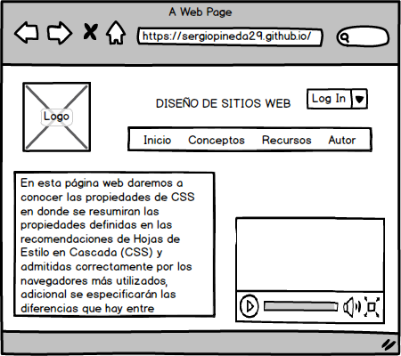

Propiedades básicas de CSS, Display: inline, block, inline-block
Objetivos
Objetivo General
Desarrollar sitios web en formato HTML5 y CSS3 por medio del uso de diferentes editores de código
Objetivos Especificos
- Aprender el uso de etiquetas HTML
- Identificar las propiedades de CSS
- Diferenciar el significado display:block, inline e inline-block en CSS
Materiales
¿Qué diferencias hay entre display:block, inline e inline-block en CSS?
Display
Propiedades CSS estables
Tabla resumen de propiedades CSS y sus
valores
Propiedad display
Diseño CSS - pantalla: bloque en línea
¿Qué
diferencias hay entre display:block, inline e inline-block en CSS?
Propiedades CSS: Inline block vs Float (video)
Explorando las propiedades y valores más populares de CSS
(video)
Estilos css: display block, inline, inline-block y float
(video)
Maquetación

Contenido
En esta página web daremos a conocer las propiedades de CSS en donde se resumiran las propiedades definidas en las
recomendaciones de Hojas de Estilo en Cascada (CSS) y admitidas correctamente por los navegadores más
utilizados, adicional se especificarán las diferencias que hay entre display:block, inline e inline-block en CSS